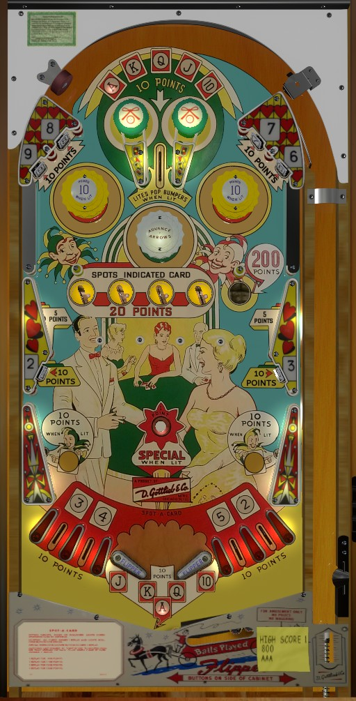

Any 1-point switch in the game rotates whether Ace, King, Queen, Jack, or 10 is lit at the center top lane and the out hole. Making the center top lane or draining the ball lights the lit card in this set, and scores 10 points. The center top lane also lights the yellow pop bumpers and the slingshots to score 10 points instead of 1; they unlight when a ball reaches the drain.
At any given time, 4 adjacent card ranks are lit with arrows on the backglass. The four saucers halfway up the playfield score 20 points and light the backglass card pointed to be the respective arrow: the leftmost saucer spots the card being pointed at by the leftmost arrow, etc. The white pop bumper labelled Advance moves the set of 4 arrows. The arrows never reset to any given position on their own, even when a ball ends or a new game begins. The set of 4 arrows will never "straddle" the ranks: if it is advanced further while pointing at the 5-4-3-2, it will reset to be pointing at Ace-King-Queen-Jack.
The gobble hole just to the right of the saucers always scores 200 points. Nothing else in the game gives more than 20, so if you are playing for points, it's gobble hole or nothing. An entire game where no balls enter the gobble hole will frequently score less than the 200 that is earned from entering the gobble hole a single time.
In addition to the top lane, drain, and saucers, cards can also be earned from standup targets and the out lanes. 9 and 8 are in the top left; 7 and 6 are in the top right; 2 and 3 are in the lower left and lower right. There are 4 out lanes, which award cards 3, 4, 5, and 2 from left to right. Collecting all 13 cards in one game scores a Special and lights the rollover button in the center of the playfield to score unlimited additional Specials. Specials can only score a free game, no points or extra balls.
There is no extra ball feature or end of ball bonus (other than the 10 points and A-K-Q-J-10 card you get for any drain). Bumpers and slingshots unlight when any ball drains. Tilt ends game.
The below picture of Spot-a-Card's playfield was taken from the VPX recreation by Loserman76.
